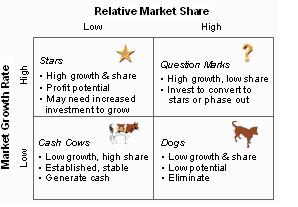
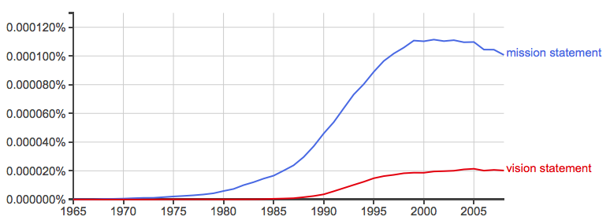

Further critical discussion of a range of aspects of strategy can also be found here
Further critical discussion of a range of aspects of strategy can also be found here
Corporate strategy is a comparatively new field which, took off a decade or so after WWII. There were various technical disciplines maturing in WWII, like operations research and some institutional development around that in universities, like the Cowles Commission at the Uni of Chicago and defence-related establishments like RAND.[1. A lot of this is written up in Philip Mirowski's magnum opus, Machine Dreams, the full text of which you can download from this link should you wish.] Herbert Simon, who later won a Nobel in Economics and is associated with the word 'satisficing' was also part of this adventure. Like the habitual, superstitious use of CGE modelling in policy analysis and advocacy today, these techniques were typically oversold and led to various disasters - perhaps best illustrated by the technocratic prosecution of the Vietnam War under Robert Mcnamara. But one can at least analytically separate this overreach from the idea that, if they'd been used with more intellectual humility, the new tools had some value.
Following this period, strategy various entrepreneurs found ways of scaling the sale of consultancy services to firms to assist them develop strategy. I have my doubts about this stuff. I've never found it very persuasive and one of its distinguishing characteristics is its analytically looseness. But it isn't snake oil - or isn't inherently snake oil. SWOT analysis has always struck me as a very commonsensical heuristic or set of prompts to adopt if one is trying to think about the future of an organisation or part of it.

This matrix may not seem worth a lot to you. It doesn't seem a lot to me, I have to admit. But it made the founders of Boston Consulting a shedload of money.
Not only was it easy to understand, but the quadrant could then be populated with data and then the consultant was selling more than a heuristic. They were selling their clients intel on where they fitted in the competitive landscape which could then be sold over and over again. The book Lords of Strategy documents who these entrepreneurs were and how they did it. Another one was Michael Porter at the Harvard Business School who developed a story about how competitive advantage develops. More recently Clayton Christensen did something similar - though more boutique. He set the template in the Innovators Dilemma and has since punched out Dilemmas like the Rank Organisation punched out Carry On movies.
The book Lords of Strategy documents who these entrepreneurs were and how they did it. Another one was Michael Porter at the Harvard Business School who developed a story about how competitive advantage develops. More recently Clayton Christensen did something similar - though more boutique. He set the template in the Innovators Dilemma and has since punched out Dilemmas like the Rank Organisation punched out Carry On movies.
Porter and Christensen market their thoughts as a 'theory' of how things happen which is then sold back to industry as new insight. In both cases, the basic ideas are explained in a short and sweet Harvard Business Review article and then repeated at book length with an embarrassing amount of padding and repetition. Porter experimented with the thickness of the business book like the Russians experimented with the thickness of the novel.
Both Porter's and Christiansen's 'theories' engendered a small rump of academic quibbling about whether they were right or not. But that kind of misses the point. Neither 'theory' is expounded as a testable hypothesis — or to put it differently — to the extent that people think it is, more fool them. [2. For instance here's Andrea Ovans breathlessly explaining the genius of Michael Porter:
“Price competition can’t be all there is to it,” he explained to me {thus ignoring fifty years of economic analysis of imperfect competition, both theoretical as in the case of Chamberlain and Robinson and empirical as in the case of Berle and Means. NG}, when during the course of updating that seminal piece in 2008, I asked him about the origins of the five forces framework. And so, he famously argued, in addition to the fierceness of price competition among industry rivals, the degree of competitiveness in an industry (that is, the degree to which players are free to set their own prices) depends on the bargaining power of buyers and of suppliers, as well as how threatening substitute products and new entrants are. When these forces are weak, as in software and soft drinks, many companies are profitable. When they are strong, as in the airline and hotel industries, almost no company earns an attractive return on investment. Strategy, it follows for Porter, is a matter of working out your company’s best position relative not just to pricing pressures from rivals but to all the forces in your competitive environment.
When you 'test' these hypotheses to the extent that they're clear, they'll turn out to be kind of true, but with lots of exceptions.] It's a story that suggests a heuristic with strong normative implications about how competition can shape capabilities (Porter) or how dominant firms need to avoid the mistake of killing off 'disruptive' possibilities that, if the firm does not nurture them, will grow elsewhere and unseat their dominance. These forays are much less coherently structured than the usual economics paper. Yet in many ways their pragmatic informality (occasionally leaning on some formal heuristic) is a sensible way to reason our way to conclusions about how we should act in practical situations. In many ways this is the way Krugman does economics today, and as I've argued previously, I think his economics in that style is much more useful than his more academically respectable work - which is surprisingly useless.[3. As I argued in the linked piece, "Strategic trade theory tells us what we already knew (though economists spent a lot of time ignoring it) – namely that economies of scale are important in determining the patterns of trade, that in principle countries can intervene to advantage themselves in trade by that its difficult, risky and the payoffs are typically not large. Krugman argued that he and his comrades couldn’t have known that until they tried. Well fair enough, but economists of great standing – like John Hicks and Milton Friedman had already warned that the problem with modelling imperfect competition was that one was forced into making too many ad hoc assumptions to get models to work for them to be much use. That’s exactly what happened."] My only objection to 'strategy' of the heuristic kind I've mentioned above is not the informality of its reasoning, but the lack of rigour, or perhaps I should say 'care' with which it is applied. It's very often a collection of stories with little regard for obvious questions like how representative they are, or how much retelling the stories of existing firms might reflect simple randomness rather than any larger patterns in the world itself[4. Every firm has a story to tell and grabbing the firms with above average performance over the last five years as Tom Peters did in In Search of Excellence and then extracting from those stories 'lessons' to discover what excellence really is and isn't risks credulousness. How do you know they're not just the lucky firms. As I understand it a follow up study of the book looked at the performance of the same cohort in the next five years and found below average performance - in other words it seems more likely than not that what was being observed was random luck in the marketplace followed by mean reversion.] or survivorship bias. And yet. And Yet. … And yet beginning in the mid 70s and moving up the hype cycle for a good two decades after that, something else carried all before it in strategic planning within organisations. Here the emphasis isn't on specific concepts. It's not really on analysis at all, though no doubt its defenders would say that this was what emerges in the process. Yes, folks, this is the transformation by which virtually all organisations came to have a mission statement, which was often extended to a full suite of utterances with the addition of a vision statement.

A Google n-gram of the frequency of "mission statement" and "vision statement" over time. But Troppo would not be Troppo if it didn't leave its readers gasping for air, wondering how things would turn out in the next bodice-ripping instalment.
Shorter Nicholas: Heuristically, heuristics beat analysis. But that's only heuristically.
Corporate manipulation of the public space goes back much further than after WW2. In Taking the Risk out of Democracy the introduction states, "It was the, however the advent of World War 1 which provided mass propaganda with its central place in Twentieth Century political thinking. "....in 1913, a committee of the USA Congress was established to investigate the mass dissemination of propaganda by the the National association of Manufacturers, the leading business organization of the time" An Australian, Alex Carey, who died in 1988, was a leader in drawing the attention of the world to this problem. Taking the Risk out of Democracy is a collection of articles by Carey
Thanks DD,
The piece is really just a warm up for part two :)
Indeed, I recall walking through an exhibition of WWI posters and being horrified at how manipulative they were and thinking that I couldn't imagine posters from - say - the US Civil War being like that. Truly the beginning (or at least from what I've seen the beginning) of PR as a massive presence.
I recall rather vividly a photograph of the hero of Mafeking, with his eyes holding those of the viewer in a recruiting advertisement for WW1. I recall the wording as, "Your Country Needs You" I think the photo was in a book commemorating the reign of George V.
http://www.portrait.gov.au/exhibitions/all-that-fall-2015 The 5 min video at top of the page features many of the posters in the show you are referring to.